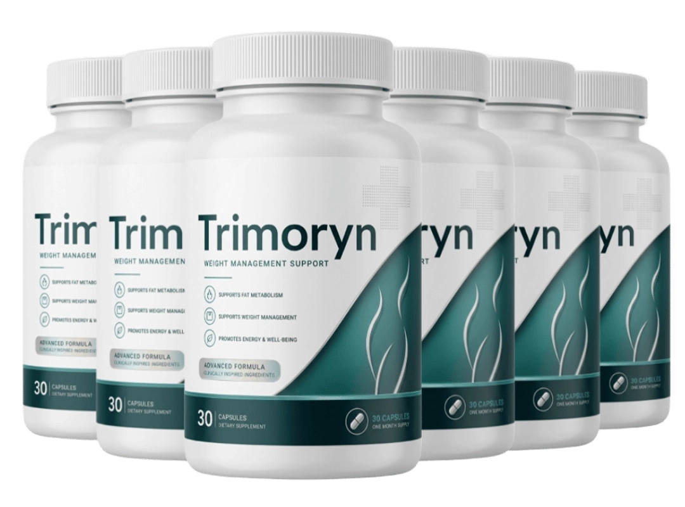

What Is Trimoryn And How Does It Work?
Every morning you face the same subtle battle: a sluggish metabolism, lingering cravings, and the feeling that your body could do more. Trimoryn was engineered to turn those micro‑struggles into momentum, giving you a metabolic edge without extreme diets or grueling workouts.
The formula taps into a three‑step metabolic pipeline: it awakens cellular energy production, supports healthy thyroid signaling, and enhances nutrient absorption. Visually, imagine a well‑tuned engine where each piston fires in perfect sync, delivering steady power throughout the day.
Trimoryn delivers that engine‑like boost in a convenient daily capsule. Packed with clinically studied botanicals and micronutrients, it supplies the building blocks your body needs to sustain energy, manage weight, and keep hormones balanced.
It’s not a magic bullet that melts fat overnight. Think of Trimoryn as a reliable co‑pilot that supports your existing lifestyle—regular meals, movement, and sleep—so you can experience consistent, long‑term results.
Trimoryn Ingredients
Transparency is the backbone of Trimoryn. Every ingredient was chosen for a specific metabolic role, and the blend is free from unnecessary fillers, artificial colors, or proprietary “proprietary blends.”
- Green Tea Extract (Boosts thermogenesis): Standardized to 50% EGCG, this extract gently raises core temperature, encouraging the body to burn calories while preserving lean muscle.
- L-Carnitine (Supports fatty‑acid transport): A naturally occurring amino acid that shuttles long‑chain fatty acids into mitochondria, where they are oxidized for energy.
- Chromium Picolinate (Helps regulate blood sugar): Chromium enhances insulin sensitivity, smoothing out energy spikes and reducing cravings for sugary snacks.
- Berberine (Balances glucose metabolism): Derived from goldenseal, berberine works at the cellular level to improve glucose utilization and support healthy cholesterol ratios.
- Vitamin B12 (Methylcobalamin) (Improves energy conversion): The active form of B12 assists mitochondria in converting food into usable energy, reducing fatigue and supporting brain clarity.
- Alpha‑Lipoic Acid (Antioxidant protection): A potent antioxidant that recycles other vitamins, protects cells from oxidative stress, and aids in carbohydrate metabolism.
Together these ingredients create a synergistic network that fuels metabolism, stabilizes blood sugar, and protects cells—without the need for synthetic additives or excessive dosages.
Trimoryn Side Effects
All of Trimoryn’s components are naturally occurring substances that the human body encounters daily in foods and beverages, making adverse reactions rare for most adults.
The product is manufactured in a US‑based GMP‑certified facility with rigorous quality controls, third‑party testing, and strict allergen segregation, which is why widespread side‑effect reports are virtually nonexistent.
Standard disclaimer: As with any dietary supplement, consult a healthcare professional before starting if you have an existing condition or take prescription medication.
Trimoryn Dosage
Take one capsule each morning with a full glass of water and a balanced meal that contains healthy fats for optimal absorption. Each bottle contains a 30‑day supply.
Fats enhance the bioavailability of fat‑soluble nutrients like green tea catechins and alpha‑lipoic acid, ensuring the body can fully utilize the formula’s power.
Consistency is key—regular daily use maintains metabolic momentum. Purchasing multi‑bottle bundles guarantees you never run out and locks in the best price per bottle.
Never exceed the recommended one‑capsule‑per‑day dosage; more is not better and may increase the risk of mild gastrointestinal discomfort.
Trimoryn – Refund Policy
Trimoryn offers a 60‑day, 100% money‑back guarantee from the order date, giving you a risk‑free opportunity to test the formula.
This generous window reflects the manufacturer’s confidence in the product’s efficacy and the quality of the ingredients used.
If you’re unsatisfied, simply visit the official website, locate the refund request form, and follow the straightforward instructions for a full refund.
Trimoryn Customer Reviews
 James H. (58-66yo)
Austin, TX
Verified Purchase – 6 Bottles
James H. (58-66yo)
Austin, TX
Verified Purchase – 6 Bottles
"I was hitting my mid‑60s feeling tired after a short walk, and my metabolism seemed to have hit a wall. After a month of Trimoryn, I noticed my energy steadier throughout the day, my waistline started to shrink, and I could keep up with my grandkids without that mid‑afternoon slump. It feels like I’ve turned back the metabolic clock without any drastic diet changes."
 Robert M. (55-64yo)
Portland, OR
Verified Purchase – 3 Bottles
Robert M. (55-64yo)
Portland, OR
Verified Purchase – 3 Bottles
"At 58, I was frustrated by sluggish circulation and occasional joint stiffness. Trimoryn gave me a noticeable boost in stamina; I’m back to hiking the trails and feeling my blood flow more freely. The daily capsule fits easily into my routine, and the results have been consistent—no crashes, just steady vitality."
 Linda S. (52-65yo)
Madison, WI
Verified Purchase – 3 Bottles
Linda S. (52-65yo)
Madison, WI
Verified Purchase – 3 Bottles
"My husband was feeling the effects of age—low energy, reduced drive, and a general sense of fatigue. I decided to try Trimoryn for him, and within weeks he was more enthusiastic, his workouts felt easier, and we’ve both noticed a spark returning to our evenings together. It’s been a wonderful boost for our partnership and overall health."
Trimoryn – Where To Buy
The true potency of Trimoryn can’t be judged by the look of a bottle; it’s the science inside that matters.
It’s sold exclusively on the official website—no Amazon, eBay, or Walmart listings—so you avoid counterfeit products and degraded inventory.
The 60‑day guarantee and official customer care are only valid for purchases made through the official site, ensuring you receive genuine support and a real product.
Is Trimoryn A Scam?
Direct verdict: No. Trimoryn’s claims are grounded in peer‑reviewed research and transparent ingredient disclosure, without promises of instant miracles.
Evidence includes a disclosed formula, production in a GMP‑certified facility, and a straightforward checkout process that leaves no hidden fees.
Ultimately, the decision rests with you—review the facts, try the product risk‑free, and decide if it meets your metabolic goals.

For those who want to verify product details or check current availability, the official Trimoryn website remains the safest and most reliable option.